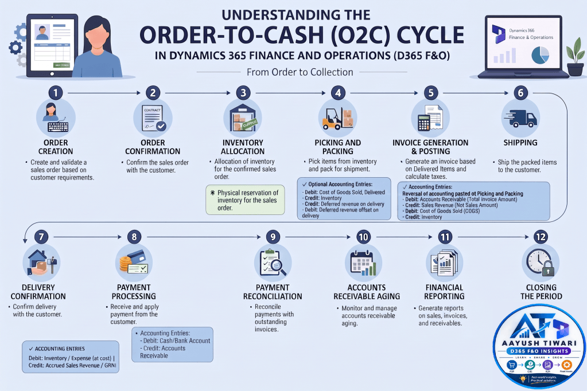

Navigating the Order-to-Cash (O2C) Cycle in Dynamics 365 Finance and Operations (D365 F&O)
The O2C cycle is a fundamental process in any organization, ensuring smooth operations from order placement to cash receipt. Here’s a detailed breakdown of the key events and associated accounting entries in D365 F&O:

- Create and validate a sales order based on customer requirements.
- Confirm the sales order with the customer.
- Allocation of inventory for the confirmed sales order.
- Physical reservation of inventory for the sales order.
- Pick items from inventory and pack for shipment.
- Optional Accounting Entries:
– Debit: Cost of Goods Sold, delivered
– Credit: Inventory
– Credit: Deferred revenue on delivery
– Debit: Deferred revenue offset on delivery
- Inventory Movement:
- Physical inventory reduction – With physical voucher and physical cost on the basis of inventory valuation = Moving Average.
- Generate an invoice based on delivered items and calculate taxes.
- Accounting Entries:
Reversal of accounting posted at Picking and Packing
– Debit: Accounts Receivable (Total Invoice Amount)
– Credit: Sales Revenue (Net Sales Amount)
– Credit: Tax Payables
– Debit: Cost of Goods Sold (COGS)
– Credit: Inventory
Financial Cost of inventory is recorded based on moving average method of inventory valuation.
- Ship the packed items to the customer.
- Confirm delivery with the customer.
- Receive and apply payment from the customer.
- Accounting Entries:
– Debit: Cash/Bank Account
– Credit: Accounts Receivable
- Reconcile & settle payments with outstanding invoices.
- Monitor and manage accounts receivable aging.
- Generate reports on sales, invoices, and receivables.
By understanding these steps, tracking inventory movements (both physical and financial), and managing associated accounting entries, organizations can ensure accuracy and efficiency in their financial processes. These accounting principles remain consistent across different ERP software.